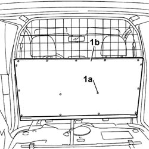

7027H25 TRIM on dividing grille - R.R.
- Path
- Procedures > 70 FITTINGS > 7027 LOAD CARRYING COMPARTMENTS > 7027H load compartment partitions > 7027H25 TRIM on dividing grille - R.R.
- Kind
- repair procedure (removal / refitting; the operation number is the code)
- Applies to
- all engines; all production periods
- Interactive page
- https://sloeber94.github.io/elrnDB-fPnd/en/#/2753148
Applies to: all engines; all production periods; only with equipment: VAN Configuration
 Removing
Removing
 Refitting
Refitting7040B10 load platform (luggage platform) trim - r+r
7040B16 rest platform in load compartment
1. Using the special tool, release the fixing buttons (1a) and remove the panel on the grille (1b).
 | Name | Country |
|---|---|---|
- | Scraper blade | 1.878.077.000 |

Applies to: all engines; all production periods; only with equipment: VAN Configuration
Refitting
RemovingCheck the condition of the fixing buttons and replace those that are damaged.
Fit the panel on the grille and secure it using the special buttons.